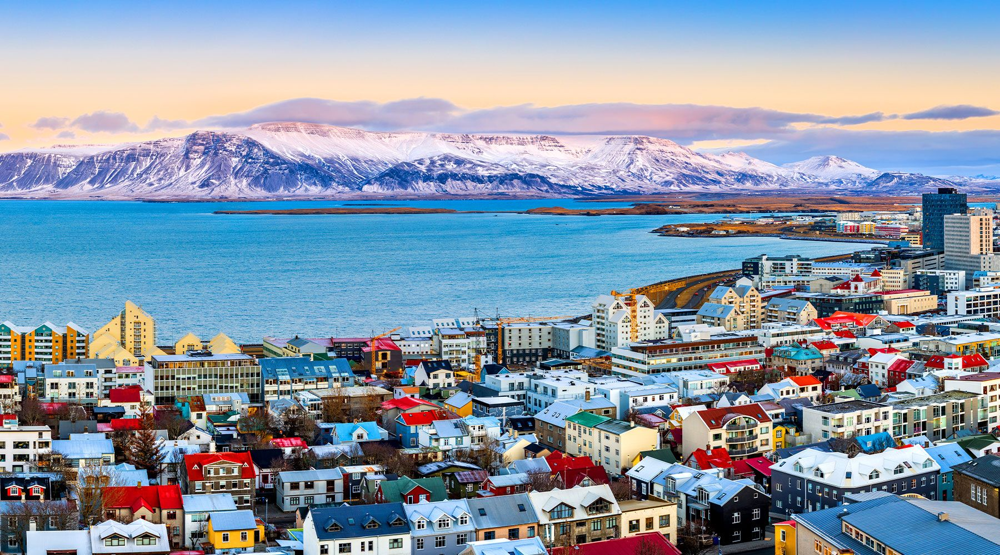

Whatever you might want to see or do Iceland might have it for you. If you want to feel an see the power of nature you can to that in Iceland with extraordinary landscape, Amazing Waterfalls, To many Volcanoes, Large and Small Glaciers, Lagoons, Hot Springs and Mountains. If you want to calm down and enjoy the nature Iceland has Northern Lights, Hiking Paths, enough nature for you get lost in and some extraordinary towns like Westman Islands where you can really feel almost overwhelmed by nature Iceland is truly amazing and we suggest if possible to stay at least 7 days
Learn more on Wikipedia.
From the mighty glaciers to the rolling waves of the Atlantic Ocean to the steaming geothermal pots, Iceland is a land that, in many ways, is defined by water. What better way to connect to Icelandic culture, than emulating the locals and visiting one of Reykjavik's local pools? Thanks to Iceland's renewable energy policies, the use of water in large capacities (i.e. for swimming pools/saunas) is very cheap, therefore making it a favourite pastime amongst Icelanders. That passion results in 18 swimming pools being located in the greater Reykjavík area alone. Some of these pools have both an indoor and an outdoor pool, a sauna and at least one hot tub (some even have as many as 7 or 8). Thankfully, tolshe po have heated water, making them accessible all year round.>
